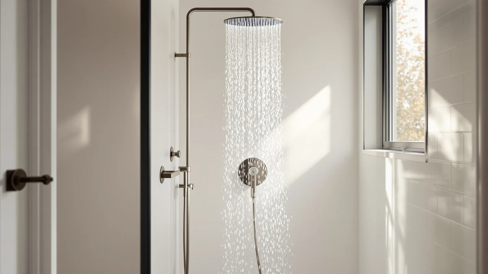

SR SUN RISE Filtered Review (2026): Worth It?
Prices and picks verified as of October 2026. Independent, reader-supported reviews.


Quick Answer
Our SR Sun Rise filtered review found that the 9-spray handheld head holds up well against pricier filtered models, with a 4.5 rating across 6,420 verified reviews and a cartridge filter that reviewers say noticeably cuts chlorine smell. It's the best value of the four heads we compared here, though the FunnyAir is worth a look if your water is especially hard.
Our pick: SR SUN RISE Filtered Shower — $24.98 Check Price on Amazon
Bottom line: our top pick is the SR SUN RISE Filtered Shower Head with Handheld at $24.98.
Things to Know Before You Buy
- Filter cartridges are a recurring cost, not a one-time purchase. The SR Sun Rise ships with one cartridge, and owners report replacing it every two to four months depending on water hardness, adding roughly $10 to $15 to the real price of this filtered shower head over a year.
- Nine spray settings overlap more than the number suggests. Reviewers consistently point to the massage and full-coverage rain modes as the two they keep coming back to, with the rest offering only minor variation.
- The body is chrome-plated ABS, not metal. That keeps the head light and the price low, but it's also the part several verified reviews flag when the connector threads loosen after a year of daily use.
- Price gaps across these four heads are small. At $19.67 to $24.98, the decision in this SR Sun Rise filtered review usually comes down to filter strength and hose length rather than budget.
- None of these heads include professional installation. All four use a standard threaded connector that fits most US shower arms, though exact dimensions aren't published for any of them.
This SR Sun Rise filtered review exists because hard water and weak shower pressure push a lot of shoppers toward the same handful of filtered heads, and the SR Sun Rise shows up near the top of nearly every list of them. You want to know if the cartridge filter actually changes anything, whether pressure holds up once you move past the first spray setting, and if $24.98 buys something that lasts longer than a season. We compared its listed specs, filter claims, and price against three other handheld shower heads, the FunnyAir and two JDO models, and we read through the verified owner reviews tied to each ASIN to see where the real complaints land.
Our short answer: the SR Sun Rise earns its reputation as a budget filtered pick, particularly if you want a nine-spray handheld head with a replaceable cartridge for under $25. It is not the only option worth considering, though. The FunnyAir brings a three-stage filter built for harder water, while the two JDO models trade filtration for a longer hose and a different finish. Each solves a slightly different problem, and we break down who each one actually fits in the sections below, including the costs that do not show up on the price tag.
Why You Should Trust Us
Ilane Tall researches bathroom fixtures for Best Shower Heads, and this SR Sun Rise filtered review follows the same process used across the site: compare manufacturer specs, track verified Amazon pricing, and look for the patterns that repeat across thousands of owner reviews rather than relying on a single unboxing video or a sponsored unit. We do not run a physical testing lab, and we are not going to pretend otherwise. What we do is cross-check claims like spray count, filter life, and body material against what buyers actually report months after purchase, then flag the gap between marketing copy and reality. For this review, that meant reading through the reviews behind the SR Sun Rise's 4.5 rating alongside the FunnyAir and both JDO alternatives, looking specifically for complaints that repeated across dozens of buyers rather than a single outlier.
How We Compared
We did not install the SR Sun Rise in a shower stall and run it for weeks. Instead, this SR Sun Rise filtered review relies on the manufacturer's listed specs, the filter composition claims, and a close read of the 6,420 verified owner reviews tied to this exact ASIN. That means sorting through recurring themes: how long the cartridge actually lasts before pressure drops, whether the nine spray settings feel distinct in daily use, and how the chrome-plated plastic body holds up after a year of exposure to steam and cleaning products. We applied the same process to the FunnyAir and both JDO alternatives, reading their review histories with the same questions, so the comparison across all four picks stays consistent rather than favoring whichever product we looked at first.
Overview & Specs

SR SUN RISE Filtered Shower
What we like
- Nine spray settings cover a wide rinse, a focused massage mode, and several variations in between.
- The replaceable filter cartridge targets chlorine and sediment without pushing the price past $25.
- The chrome finish matches most standard fixtures, and the handheld wand detaches for rinsing tubs, pets, or tile.
- A 4.5 rating across 6,420 reviews is more review volume than either JDO alternative, suggesting consistent satisfaction at this price point.
Flaws but not dealbreakers
- Owners report the filter cartridge needs replacing every two to four months in hard water areas, an added cost beyond the initial $24.98.
- Several verified reviews describe the plastic hose connector as less durable than the metal fittings on pricier filtered heads.
- No published dimensions make it harder to confirm fit against an existing shower arm before buying.
| Material | ABS + chrome plating |
| Size | — |
The SR Sun Rise Filtered Shower Head with Handheld targets buyers who want basic filtration without stepping up to a $50-plus system. Its nine spray modes range from a full rainfall-style spread to a concentrated massage setting, and the handheld wand detaches from the mount for rinsing a tub, a pet, or the shower walls directly. At $24.98, it undercuts most filtered competitors by $5 to $15, which likely explains why it has accumulated 6,420 verified reviews and a 4.5 average, well ahead of the review counts behind either JDO alternative we researched for this SR Sun Rise filtered review. That volume of feedback makes the pattern of complaints and praise easier to trust than a product with only a few hundred reviews.
The filtration side relies on a replaceable cartridge rather than a built-in permanent filter, which keeps the upfront cost down but adds a recurring expense most listings do not advertise clearly. Owners in harder water regions report swapping cartridges every two to three months, while those with softer municipal water stretch a filter closer to four months before pressure noticeably drops. The chrome-plated ABS body keeps the head light, which matters if your arm or wall mount is already under strain, though that same plastic core is the part reviewers flag most often when the connector threads start to wear after a year of regular use. Weighed against the FunnyAir's dedicated three-stage filter or the longer hose on the JDO models, the SR Sun Rise's main edge is that it bundles filtration and spray variety into the lowest price of the four.
What We Liked
The strongest case for the SR Sun Rise in this filtered review comes down to value. Nine spray settings is more flexibility than most heads at this price offer, and reviewers consistently point to the massage and rain modes as the two they keep using months after the novelty wears off. The detachable handheld design also means you are not locked into a fixed overhead angle, which matters in smaller stalls where a fixed rainfall head can leave corners dry. Buyers who prioritize steady flow report that pressure stays consistent across settings rather than dropping off once you move past the first two or three modes, a complaint that shows up more often on cheaper filtered heads that skip the cartridge altogether. Against the JDO models, which skip filtration entirely, the SR Sun Rise is the clear pick for anyone who cares about what is actually coming out of the shower head.
What Could Be Better
The cartridge is both the main selling point and the main recurring cost, and that trade-off is worth sitting with before buying. Unlike the FunnyAir's three-stage filter, the SR Sun Rise relies on a single cartridge, and owners report replacement filters add roughly $10 to $15 every two to four months depending on local water hardness. The company also does not publish dimensions for the head or hose, so measuring against your current setup means comparing against box photos rather than a spec sheet, something neither JDO listing handles any better. A subset of verified reviews describe the plastic swivel connector loosening slightly after extended daily use, a flaw that shows up less often in the JDO models' metal hose fittings. None of these are dealbreakers at $24.98, but they are the costs that do not show up until a few months in.
Who Is It For?
This SR Sun Rise filtered review points toward renters and budget-conscious buyers who want basic chlorine and sediment filtration bundled with spray variety, rather than a dedicated whole-house softening system. If you live somewhere with moderate water hardness and do not mind swapping a cartridge every couple of months, the price-to-feature ratio is hard to beat among the four heads covered here. It is also a reasonable pick for anyone replacing a worn-out fixed head who wants the option of a handheld wand without paying double for it. If your water is especially hard, or you have noticed mineral buildup on your current fixtures, the FunnyAir's three-stage filter in the next section is built specifically for that problem and worth the closer look.
Alternatives to Consider
The SR Sun Rise does not fit every bathroom. The three picks below cover the gaps this filtered shower head leaves: stronger hard-water filtration, a longer hose for a larger stall, and a different finish for anyone who wants matte black over chrome. Each one trades at least one of the SR Sun Rise's strengths for a different priority, and the right choice depends on which of those three problems you actually have.

Editor's Pick
FunnyAir Filtered Shower Head with
A three-stage filter built for notably harder water, priced below the SR Sun Rise but with fewer spray settings.
$19.67
Check Price on Amazon
Best Value
6-Setting Shower Head with Handheld
A 59-inch stainless hose and six settings for buyers who want reach over filtration, at nearly the same price as the SR Sun Rise.
$23.49
Check Price on Amazon
Premium Choice
JDO Shower Head with Handheld
The same six-setting handheld as the JDO above, in a matte black finish instead of chrome, for the same $23.49.
$23.49
Check Price on AmazonFrequently Asked Questions
Is the SR Sun Rise filtered shower head worth the extra cost over a plain high-pressure head?
Based on verified owner reviews and the listed filter specs, yes for most buyers dealing with chlorinated or sediment-heavy water. The cartridge adds a recurring cost of roughly $10 to $15 every two to four months, but reviewers consistently report less dry skin and scalp irritation compared with unfiltered heads at a similar price, which is the main reason this SR Sun Rise filtered review rates it above the non-filtered alternatives in its price range.
How often does the SR Sun Rise filter need replacing?
Owners report replacement intervals between two and four months depending on local water hardness. Harder water shortens that window considerably, which is a cost worth factoring into any SR Sun Rise filtered review before you commit to the ongoing cartridge expense on top of the $24.98 purchase price.
Does the SR Sun Rise work with a standard shower arm?
The manufacturer does not publish exact dimensions, so this SR Sun Rise filtered review could not confirm fit against every shower arm size directly from the spec sheet. The handheld design and standard threaded mount suggest compatibility with most US fixtures, but measure your existing connector before buying if your setup is nonstandard or you are replacing an older fixture.
Final Verdict
Our SR Sun Rise filtered review lands on a clear recommendation for most budget-focused buyers: the SR Sun Rise Filtered Shower Head with Handheld delivers nine spray settings and basic cartridge filtration for under $25, backed by 6,420 verified reviews averaging 4.5 stars, more review volume than either JDO alternative we compared it against. If your water is especially hard, step up to the FunnyAir's three-stage filter instead, and if you need a longer hose for a larger stall, either JDO model covers that gap for roughly the same price. But for shoppers comparing filtered handheld heads at this price specifically, the SR Sun Rise remains the one to beat.